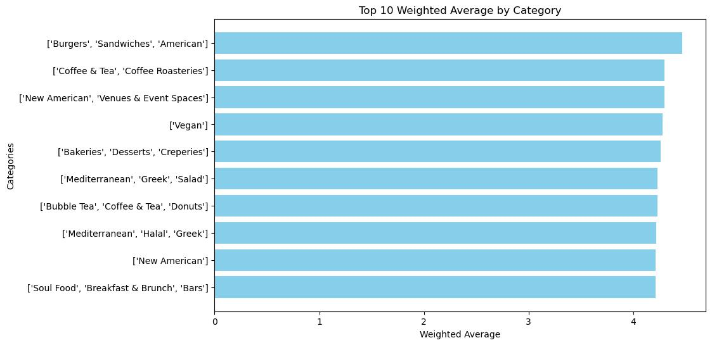
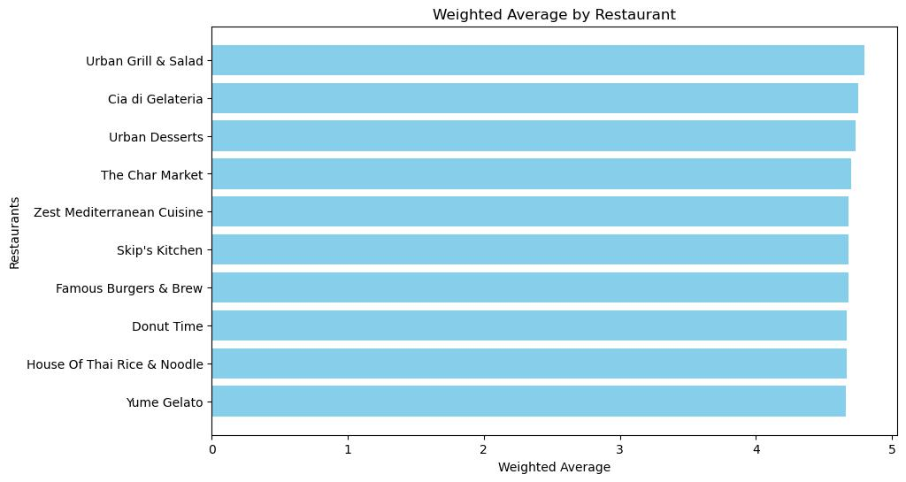
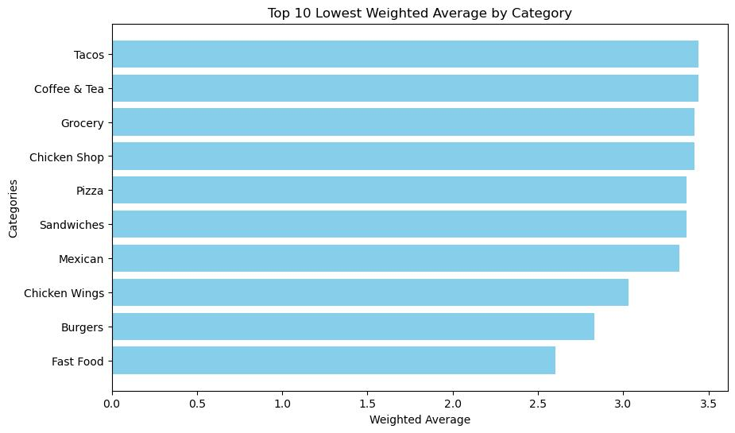
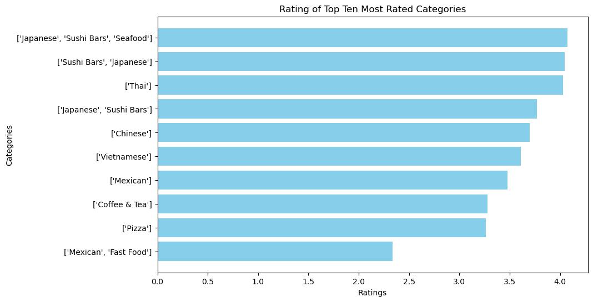

In today's landscape of heightened concern for food safety and public health, regulatory bodies like the Sacramento County Environmental Management Department (SCEMD) play a crucial role in ensuring community well-being. Driven by a commitment to enhancing quality of life, SCEMD employs various strategies including education, surveillance, enforcement, and community service, with a focus on mitigating foodborne illnesses—a significant health and economic burden.
Millions suffer from foodborne illnesses annually in the US, prompting organizations like the Centers for Disease Control and Prevention (CDC) and the Food and Drug Administration (FDA) to identify key risk factors and interventions. These encompass issues such as improper temperature control, inadequate cooking, poor hygiene, and contaminated equipment, among others.
SCEMD conducts routine inspections of retail food establishments in Sacramento County, enforcing strict compliance with health and safety codes outlined in state and county regulations. These inspections are guided by comprehensive protocols, such as the Sacramento County Retail Food Code Inspection Guide, aimed at maintaining standardized practices across establishments.
Effective food safety regulation hinges on proactive measures to identify and mitigate risks within the food supply chain. SCEMD oversees a diverse range of establishments, implementing measures to uphold hygiene and sanitation standards while reducing the incidence of foodborne illnesses.
In addition to enforcement, SCEMD engages in community outreach and educational initiatives, fostering collaboration between stakeholders. These efforts aim to empower establishments and consumers with knowledge and resources for maintaining a safe food environment.
This project embarks on an exploratory data analysis, leveraging data scraped from SCEMD reports and Yelp. Through visualization and observation, the project aims to uncover insights into health code violations within Sacramento County’s food establishments over the past year, contributing to the broader discourse on food safety and regulatory enforcement.
All data was scraped via Python and processed as either lists or dictionaries, and made into a data frame for visualizations and report format writeup in R Markdown, in the following sections. Below will outline the courses of action taken to scrape and organize the data and any problems we faced during the process.
To collect links to inspection data from the Sacramento County Environmental Management Department (SCEMD) for the previous 12 months, a systematic approach was devised, leveraging Selenium for web automation. Initially, the process involved selecting specific date ranges from the SCEMD's inspection database, which necessitated interaction with a calendar interface. Initially, the focus was on extracting data from the current and last month, facilitated by tabs on the calendar. However, this approach proved insufficient for capturing a comprehensive dataset.
Refinement of the date range selection process was crucial to obtaining a broader dataset, encompassing inspections from March 2023 to the present. This required a more intricate methodology. By identifying the XPath for the "Previous" and "Next" arrow buttons on the calendar interface, the navigation process was automated. By manually navigating through the calendar and observing the number of clicks required to reach specific dates, a systematic approach was devised. Subsequently, Selenium was utilized to programmatically perform the requisite number of clicks on the arrow buttons to navigate to the desired dates.
Handling dynamic page loading was another challenge encountered during the data collection process. Upon selecting specific dates, it was noted that the inspection data did not load entirely, necessitating interaction with a "Load More" button. To address this, a while loop was implemented to iteratively click the "Load More" button until all inspection data was loaded.
Once the complete inspection data was loaded, each inspection's URL was extracted for further processing. Utilizing CSS selectors, the "View" buttons corresponding to each inspection were targeted, as XPath did not consistently retrieve the necessary information. The attributes (links) associated with each "View" button were then saved into a list for subsequent analysis.
By meticulously executing the outlined steps, a comprehensive collection of links to Sacramento County inspection data for the past 12 months was obtained. This process laid the groundwork for subsequent data processing and analysis, enabling insights into health code violations within the county's food establishments.
In this phase of the project, the focus shifted towards extracting relevant information from the links obtained in the previous step, which led to summaries of observations and corrective actions from specific health inspections conducted at various restaurants. Each page was scraped using BeautifulSoup, a Python library for parsing HTML and XML documents. The process involved retrieving details such as the establishment name, inspection date, address, and health code violations.
One significant consideration was the possibility of multiple health inspections conducted at the same restaurant over the course of a year. Therefore, the scraping process needed to account for this potential repetition of data.
The scraping process was executed by iterating through each URL obtained from the previous step and extracting the required information. The key steps involved in the scraping process were as follows:
Establishment Information Extraction:
Inspection Date Retrieval:
Health Code Violations Extraction:
Handling Large Volume of Links:
Error Handling and Data Cleanup:
Data Storage and Merging:
The provided code snippet serves as a reference for the scraping process, showcasing the implementation of BeautifulSoup to extract relevant data from individual URLs. By systematically executing the scraping process and meticulously handling data intricacies, a robust dataset was assembled, laying the groundwork for subsequent exploratory data analysis.
In order to augment our dataset with additional information about food establishments in the greater Sacramento area, we utilized the Yelp Fusion API. This API allows for querying establishments based on various parameters such as location, cuisine type, and price level. Our objective was to gather supplementary data on restaurants, grocery stores, and convenience stores—any establishments selling food items.
Here's an overview of the process:
API Querying:
Handling API Limits:
Optimizing Query Results:
Data Cleaning and Filtering:
Result Summary:
By obtaining supplementary Yelp data, we aimed to enhance our understanding of the food landscape in the greater Sacramento area, complementing the insights derived from SCEMD inspection reports. This additional information will facilitate a more comprehensive analysis of factors influencing food safety and consumer preferences within the region.
In order to merge our datasets effectively, we needed to devise a unique identifier for each restaurant. This presented a challenge as traditional identifiers such as name, address, and zip code were not suitable due to the presence of multiple establishments with similar or identical attributes. After careful consideration, we settled on a combination of the first four numbers from the establishment's address and the first three letters of its name.
This approach offered a high degree of uniqueness, as it was highly improbable for two establishments with the same name to share the exact same four-number address. By incorporating both elements, we aimed to create a robust key that would facilitate accurate merging of our datasets.
Upon merging the datasets, we encountered a common issue where establishments appeared in multiple rows due to having multiple observations (e.g., health inspection data) associated with them. This occurred particularly because the health inspection data was scraped using dates, leading to multiple inspection records for the same restaurant.
To address this, we implemented a group-by operation followed by an aggregation function. By grouping the data by our established key, we were able to aggregate multiple observations for each establishment. Specifically, we retained the first observation for duplicate data points such as name, latitude, longitude, rating, price, etc., while consolidating different observations into a list. For instance, health code violations and inspection dates were aggregated into lists for each establishment.
This process resulted in a streamlined dataset with a reduced number of observations, from 3.6k to 2.3k. By consolidating duplicate entries and organizing the data systematically, we ensured the integrity and accuracy of our merged dataset, laying the groundwork for subsequent analysis and insights into the food landscape in the greater Sacramento area.




https://www.openstreetmap.org/export#map=13/38.5620/-121.4736 too big went to here http://download.geofabrik.de/north-america/us/california/norcal.html